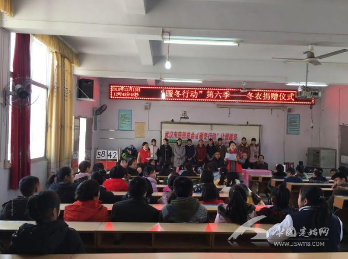
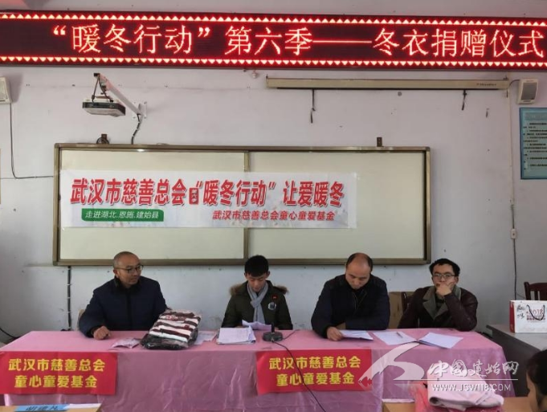
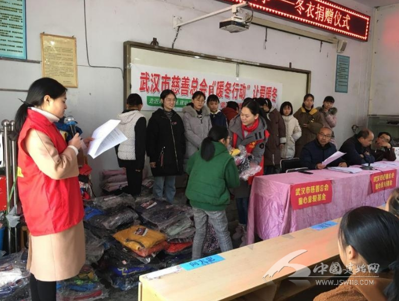
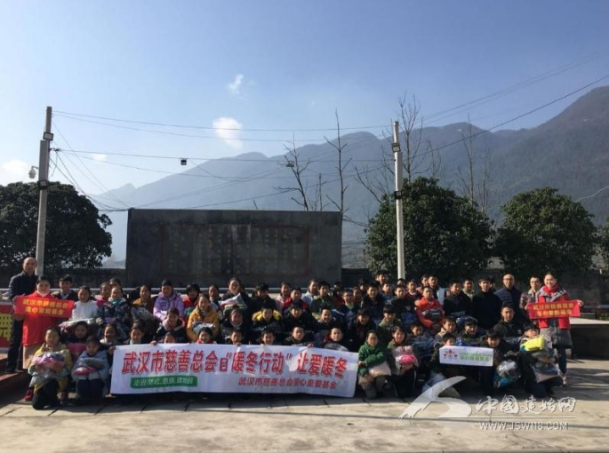

“衣旧情深”情依旧 “暖冬行动”暖人心
建始网讯（通讯员 侯贤芳）2018年12月13日中午，三里民族初级中学在学校电教室举行捐赠仪式。武汉市慈善总会童心童爱基金为我校83名留守儿童及贫困学生捐赠了“暖冬行动”类爱心衣物200多件及爱帝保暖内衣系列48套，并且为学校捐赠了价值20640元的奥美医用物料（物流运输中）
捐赠仪式上，八年级王爽同学代表受资助学生对捐助方和学校表示衷心的感谢，他说：“我们不会辜负捐助者的期望，更不会忘记今天铭刻在心中的这份感恩。请相信我们将以百倍的努力，千倍的奋斗，万倍的信心，去更加努力的学习……”
校长李天昊作总结性发言：感谢、感动、行动——感谢大家的善举、感恩爱的传递；号召老师们不断学习,诲人不倦,做人民满意的教师，号召孩子们把滴水之恩,化作自强不息、奋发学习的动力,化作克服困难、知难而进的勇气,用优异的的成绩,报答父母的养育之恩,报答社会的关怀之情,不辜负社会各界的殷切期望，把爱传递下去。
衣旧情深，每一件捐赠的“旧衣”，都需要一份爱的礼遇，那是对受赠人最好的尊重；情深依旧，每一朵受赠的“花朵”，皆应怀一份感恩之心心，那是给捐赠人最好的回馈。
奉献一点，爱撒一片，众人拾柴火焰高，滴水汇成大江，碎石堆成海岛，只要人人都有一颗奉献之心，世界将会更加美好！（编辑 都子超）